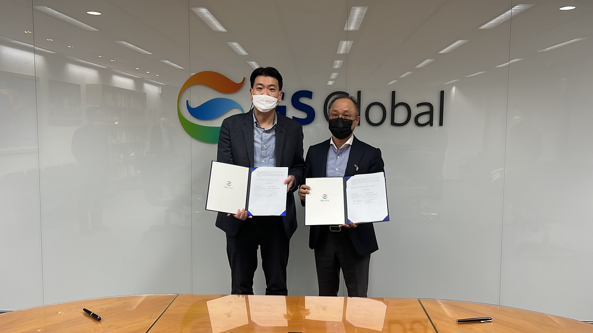
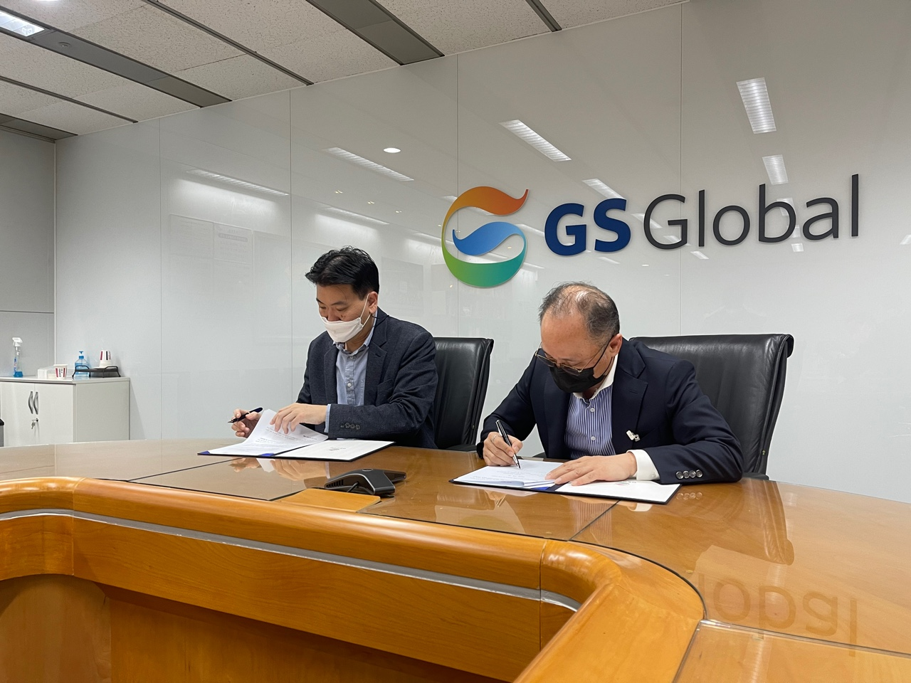

We have officially concluded that the strategic collaboration MOU with GS GLOBAL.
Accordingly, the vehicles registered in CARBAY KOREA are applied and developed to the world-wide network based on GS GLOBAL’s 30 overseas bases.
By uploading a wider variety of popular car models in the target countries,
buyers can purchase the best quality through CARBAY KOREA's specialized vehicle performance test.
According to the strategic collaboration between GS GLOBAL and CARBAY KOREA,
We can collect the needs of buyers in export destination countries in more detail,
which is a key of Korean used car export platform business.
In 2022, we can expect great results.
